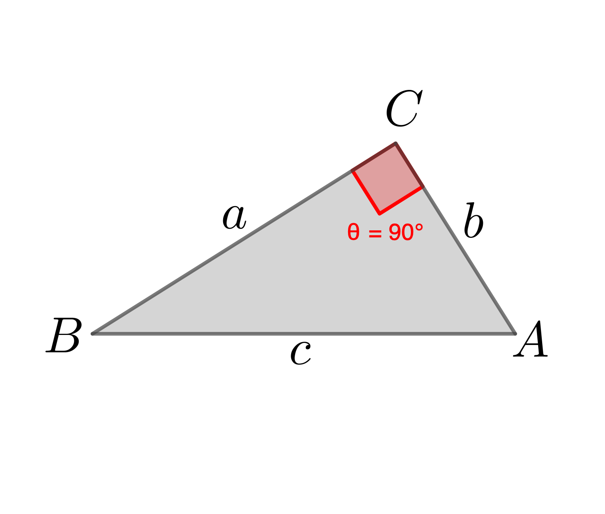
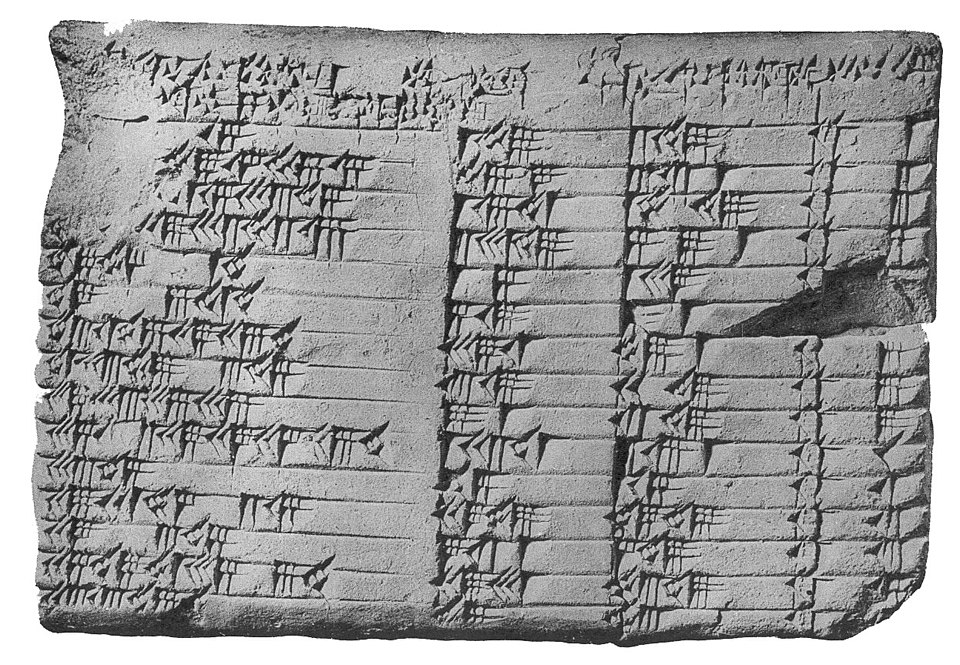
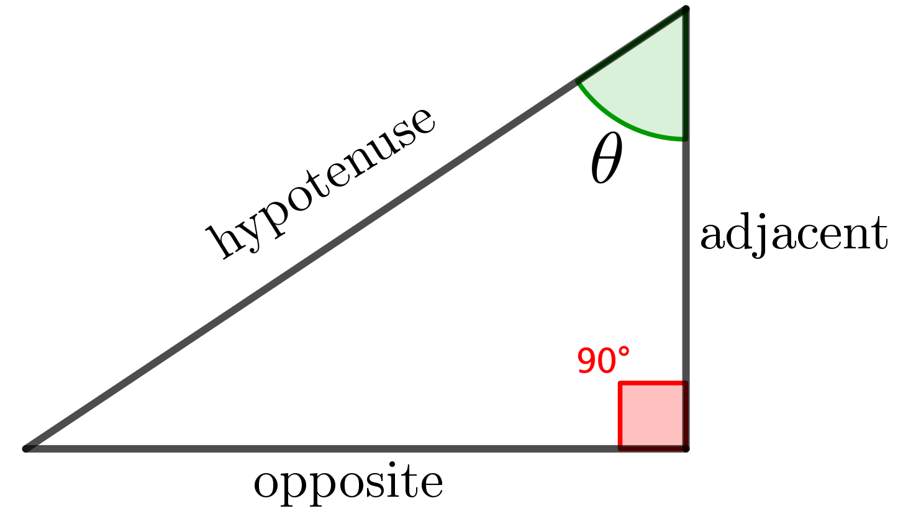
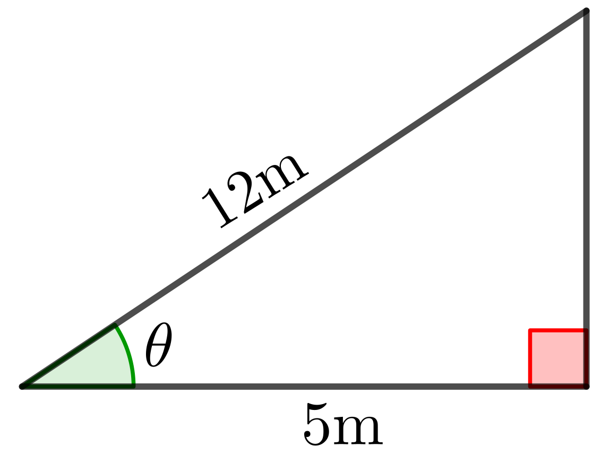
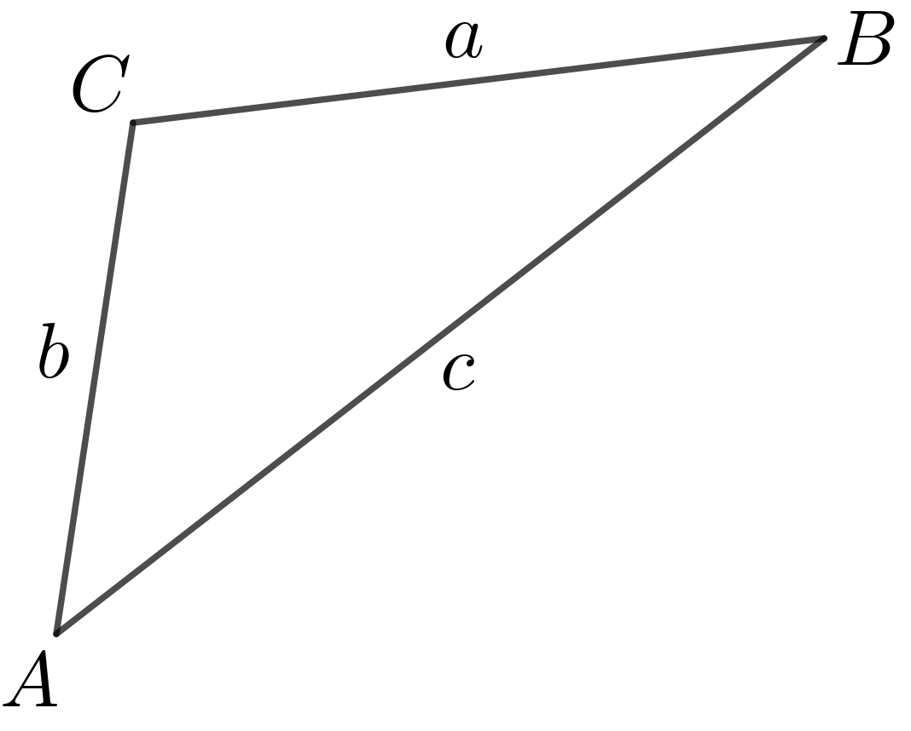

Foundation Mathematics
1017SCG
Week 2
Topics from Week 1
- Order of Operations.
- Index Laws.
- Scientific Notation.
Topics for Week 2
-
Logarithms
- Introduction to logarithms
- Evaluating basic logarithms without a calculator
- Logarithm laws (commonly known as log laws)
- Change of base rule
-
Triangles
- Pythagoras' theorem
- $\sin$/$\cos$/$\tan$ ratios
- Sine and Cosine rules
Introduction to Logarithms
A logarithm is the inverse of an exponent. It tells us what power we need to raise a base to in order to get a certain number.

Introduction to Logarithms
A logarithm is the inverse of an exponent. It tells us what power we need to raise a base to in order to get a certain number.
Introduction to Logarithms
If \( \;a^x = N,\; \) then \( \;\log_a N = x\; \)
where $\;N\gt 0,\;$ $a\gt 0,\;$ $a\neq 1.$
- \( \log_2 8 = 3\; \) because \( \;2^3 = 8 \)
- \( \log_{10} 1000 = 3 \;\) because \( \;10^3 = 1000 \)
Evaluating Logarithms Without a Calculator
Simplify the following by thinking in terms of powers:
- \( \log_2 16 \) \(=4\;\) because \(\; 2^4 = 16 \)
- \( \log_3 81 \)
- \( \log_5 25 \)
- \( \log_{10} 1 \)
Logarithm Laws
Product Law:
$\log_a\left(M\times N\right)$ $ =\log_a M + \log_a N$
Logarithm Laws
Quotient Law:
$\log_a\left(\dfrac{M}{N}\right)$ $=\log_a M - \log_a N$
Logarithm Laws
Power Law:
$\log_a\left(N^p\right)$ $= p \times \log_a (N)$
Logarithm Laws
Trivial identities:
$ \log_a(a) = 1,\;$ because $\;a^1 = a$
$\log_a(1) = 0,\;$ because $\;a^0 = 1$
Logarithm Laws
- Product Law: $\;\log_a\left(M\times N\right)$ $=\log_a M + \log_a N$
- Quotient Law: $\;\log_a\left(\dfrac{M}{N}\right)$ $=\log_a M - \log_a N$
- Power Law: $\;\log_a\left(N^p\right)$ $= p \times \log_a (N)$
- Trivial identities: $\;\log_a(a) = 1\;$ and $\;\log_a(1) = 0 $
These rules work for any base \( a > 0 ,\) \( a \ne 1 .\)
Using Log Laws - Examples
- \( \log_2\left(8 \cdot 4\right) \)
- \( \log_3\left(\dfrac{81}{3}\right) \)
- \( \log_5\left(25^3\right) \)
Change of Base Rule
If your calculator only has log base 10 or natural log (ln), you can use the change of base formula:
\[ \large \log_b (N) = \frac{\log_a (N)}{\log_a (b)} \] where \( a \) can be 10 (common log) or \( e \) (natural log).
Change of Base Rule
\[ \large \log_b (N) = \frac{\log_a (N)}{\log_a (b)} \] where \( a \) can be 10 (common log) or \( e \) (natural log).
Example: $\log_2 10$ $ =\dfrac{\log_{10} 10}{\log_{10} 2} $ $ \approx \dfrac{1}{0.3010}$ $\approx 3.32$
Why do we need logarithms anyway?
Why do we need logarithms anyway?
Imagine we are living in 1823 and we need to compute \[ x=\sqrt[3]{\frac{493.8\times \left(23.67\right)^2}{5.104}}. \]
😬 ❌🖥️
Why did you need to make such
calculation?
🧭 🗺️ 🌌 🔭
Why do we need logarithms anyway?
Imagine we are living in 1823 and we need to compute $ \ds x=\sqrt[3]{\frac{493.8\times \left(23.67\right)^2}{5.104}}. $
Why do we need logarithms anyway?
Imagine we are living in 1823 and we need to compute $ \ds x=\sqrt[3]{\frac{493.8\times \left(23.67\right)^2}{5.104}}. $
We can write $\,\ds x=\left(\frac{493.8\times \left(23.67\right)^2}{5.104}\right)^{1/3}.$
Using the properties of the logarithms, we have
$ \ds \log x=\frac{1}{3}\bigg(\log (493.8)+2\log (23.67)-\log (5.104)\bigg). $
Then we find these values using the logarithmic tables 📖.
👉 $\;x\approx 37.84$
Why do we need logarithms anyway?
Imagine we are living in 1823 and we need to compute $ \ds x = \sqrt{\frac{493.8\times (23.67)^2}{5.104}} $
👉 $\;x\approx 37.84$

Why do we need logarithms anyway?
Logarithms exists thanks to John Napier and Jost Bürgi who discovered independently at the beginning of the XVII century.
Why do we need logarithms anyway?
Since nothing is more tedious, fellow mathematicians, in the practice of the mathematical arts, than the great delays suffered in the tedium of lengthy multiplications and divisions, the finding of ratios, and in the extraction of square and cube roots- and in which not only is there the time delay to be considered, but also the annoyance of the many slippery errors that can arise.
John Napier (1614)
Practice! 📝
- Evaluate: \( \log_4 64 \)
- Simplify using laws: \( \log_2 8 + \log_2 4 \)
- Simplify: \( \log_3 81 - \log_3 3 \)
- Use change of base: \( \log_7 100 \) (use base 10)
Pythagoras' Theorem
The Pythagoras Theorem applies to right-angled triangles. It states that: \[ a^2 + b^2 = c^2 \]
where:
- \( a \) and \( b \) are the lengths of the two shorter sides (legs)
- \( c \) is the length of the hypotenuse (the side opposite the right angle)
This theorem allows us to calculate the length of any side if the other two are known.
Visualising the Theorem
In a right-angled triangle, the equation $a^2 + b^2 = c^2$ means that:
- The square on the hypotenuse has the same area as the sum of the squares on the other two sides.
|  |
Visualising the Theorem
A proof without words: $a^2 + b^2 = c^2$
Cool facts! 🤓
There are hundreds of proofs of the Pythagoras' Theorem! 🤯
Elisha S. Loomis (1940), includes over 360 proofs
By Euclid more than 2300 years ago!
Cool facts! 🤓
Ancient civilizations already knew about it!
|

Plimpton 322 is a Babylonian clay tablet, believed to have been written around 1800 BC. |

Geometric proof of the Pythagorean from roughly the 1st century BC. |
Example: Find the Hypotenuse
A triangle has legs of length \( a = 6 \) and \( b = 8 \). What is the length of the hypotenuse \( c \)?
Using the Pythagoras Theorem:
$c^2$ $ = 6^2 + 8^2 $ $ = 36 + 64 $ $ = 100$
$ c = \sqrt{100} $ $ = 10$
✅ So, the hypotenuse is 10 units.
Example: Find a Missing Side
A right-angled triangle has a hypotenuse of length \( c = 13 \) and one leg of length \( a = 5 \). Find the other leg \( b \).
$b^2 $ $ = c^2 - a^2$ $ = 13^2 - 5^2$ $ = 169 - 25$ $ = 144$
$ c = \sqrt{144} $ $ = 12$
✅ The missing side is 12 units.
Try It Yourself 📝
- Find the hypotenuse of a triangle with legs 9 and 12.
- A right triangle has a hypotenuse of 15 and one leg of 9. Find the other leg.
- If \( a = 7 \), \( c = 25 \), find \( b \).
sin / cos / tan ratios
\(\sin \theta = \) \(\dfrac{BC}{AC}\) \(=\) \(\dfrac{DE}{AE}\) \(=\) \(\dfrac{FG}{AG}\)
sin / cos / tan ratios
sin / cos / tan ratios
|  |
sin / cos / tan ratios
|
|
\(\sin\left(\theta \right) = \dfrac{\text{opposite}}{\text{hypotenuse}}\) \(\cos\left(\theta \right) = \dfrac{\text{adjacent}}{\text{hypotenuse}}\) \(\tan\left(\theta \right) = \dfrac{\text{opposite}}{\text{adjacent}}\) |
Examples: Find the hypotenuse
|
\(\cos\left(\theta \right) = \dfrac{\text{adjacent}}{\text{hypotenuse}}\) \(\cos\left(50^{\circ} \right) = \dfrac{10 }{y}\) \(\cos\left(50^{\circ} \right) \times y= \dfrac{10 }{y}\times y\) \(\cos\left(50^{\circ} \right) \times y=10 \) \(\dfrac{\cos\left(50^{\circ} \right) \times y}{\cos\left(50^{\circ} \right) }=\dfrac{10 }{\cos\left(50^{\circ} \right)}\) Hence \( y=\dfrac{10 }{\cos\left(50^{\circ} \right)}\) \(\approx 15.56\) cm |
Examples: Find a side
|
\(\sin\left(\theta \right) = \dfrac{\text{opposite}}{\text{hypotenuse}}\) \(\sin\left(30^{\circ} \right) = \dfrac{x}{5}\)
Find $x$ |

Examples: Find an angle
|  |
\(\cos\left(\theta \right) = \dfrac{\text{adjacent}}{\text{hypotenuse}}\) \(\cos\left(\theta \right) = \dfrac{5}{12}\) \(\theta= \cos^{-1}\left(\dfrac{5}{12}\right)\) \(\theta= \arccos\left(\dfrac{5}{12}\right)\) Hence \(\theta\approx 65.38^{\circ}\) |
sine and cosine rules
|  |
Sine rule: \(\dfrac{a}{\sin (A)} \) \(=\dfrac{b}{\sin (B)} \) \(=\dfrac{c}{\sin (C)} \) \(\dfrac{\sin (A)}{a} \) \(=\dfrac{\sin (B)}{b} \) \(=\dfrac{\sin (C)}{c} \) Cosine rule: \(c^2\) \(=a^2+b^2 - 2ab\cos(C) \) |